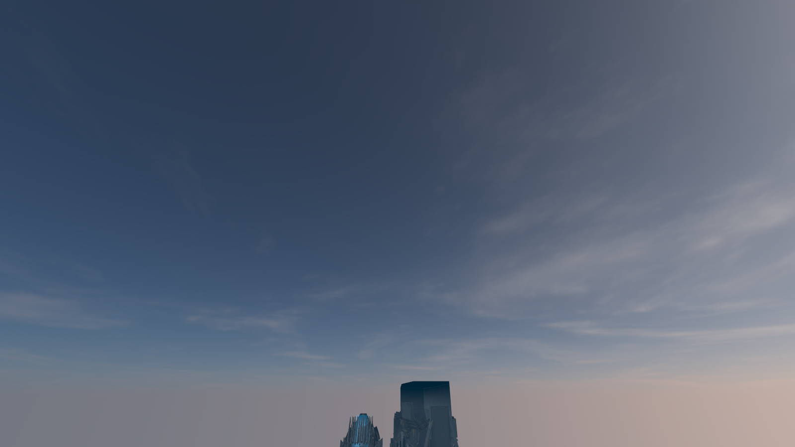
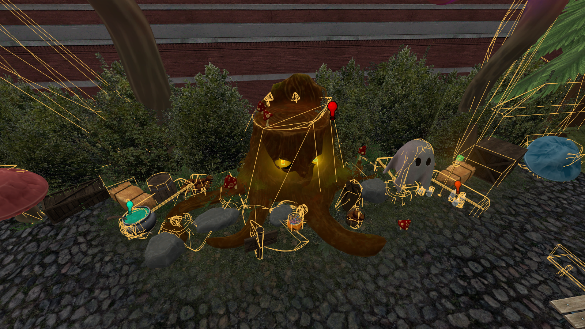

NoDraw
| NoDraw Level Editor | |
|---|---|
| Next-generation level editor for Source Engine & Garry's Mod | |

|
|
| Developer | env_snake |
| Initial Release | November 2026 |
| Current Version | 0.1.0-beta (2026-11-03) |
| Architecture | Rust + WebGPU (64-bit) |
| Target Engines | Source Engine (Source 1), Garry's Mod |
| Supported Maps | .vmf, .bsp, .vmx |
| License | Closed Beta (Tester Distribution) |
| 💾 Download Beta .ZIP (19.7 MB) Portable (No installation required) | |
NoDraw is a modern, standalone 64-bit level editor for the Source Engine and Garry's Mod, engineered in Rust on top of wgpu. Designed as the direct successor to Hammer++ and Valve's legacy Hammer Editor, NoDraw removes decades of MFC legacy baggage while delivering true real-time lighting calculations, subpixel anti-aliasing on object selection, seamless displacement sewing, and integrated BSP lump packing.
mount.cfg configurations without requiring any game modification or DLL replacement.Contents
[hide]Overview & Philosophy
The classic Valve Hammer Editor was built around Windows MFC in the late 1990s. While Hammer++ brought numerous stability and viewport improvements, it remains tethered to 32-bit/early 64-bit C++ architectures with fixed-function OpenGL assumptions.
NoDraw rebuilds the map editing workflow from fundamental principles:
- Modern Graphics Backend: Utilizing Vulkan and DirectX 12 through WebGPU. Zero crashes on large meshes or complex HDR scenes.
- Instantaneous Feedback: Edit lighting, materials, and complex brushwork with real-time feedback rather than running external compile tools.
- Safe Memory Architecture: Built with 100% memory-safe Rust, preventing pointer corruption crashes during vertex manipulation.
Core Features
Physically Accurate Halton Lighting
Unlike conventional editors that only compute simple dot-product vertex normals, NoDraw integrates a dedicated Halton 162-ray Lightbake pipeline:
- Samples 162 quasi-random Halton (2, 3) rays per prop vertex to compute indirect bounced light and sky ambient occlusion.
- Direct spotlight attenuation adheres strictly to the Source SDK 2013
LightDesc_t::ComputeLightAtPointsquadratic inverse-square model with smooth cosine transitions. - Produces deep, authentic LDR/HDR shadows matching VRAD without waiting for full BSP compilation.
Subpixel Stencil Silhouette Outlines
Selected static and dynamic props are highlighted through a two-pass Stencil Silhouette Outline shader:
- Pass 1 (Mask Generation)
- Selected models render into a dedicated R8Unorm silhouette mask with alpha-testing on sprites (e.g.
light,env_sprite). - Pass 2 (Radial Screen-Space Filter)
- A 12-sample radial bilinear filter with a parabolic falloff curve $\alpha = 4N(1-N)$ creates a smooth, anti-aliased golden-yellow contour (
#f5c518) around props without cluttering interior textures with wireframe edges.
Precise .PHY Collision Mesh Pipeline
NoDraw features a reverse-engineered parser for Havok/IVP compact surface physics files (.phy):
- Filters out internal coplanar diagonal edges (where adjacent triangle normals have dot product $> 0.985$), displaying clean, solid convex hulls.
- Multi-convex support: correctly maps compound hulls across trees, bridges, doors, and complex rock models.
In-Editor Playtest & Noclip Mode (F6)
Pressing F6 launches an instant playtest mode directly inside the 3D viewport without compiling:
- Standard player movement: W A S D navigation, Space jump, and Ctrl crouch.
- Noclip toggle via V or N with flight speed scaling up to 800 units/second via Shift.
Integrated Lump 40 Packfile (VIDE Replacement)
Solves the missing content issue by analyzing all map references and writing them straight into the compiled BSP:
- Resolves Patch materials (
includedirectives), base textures, normal maps, cubemaps, sounds, and particle PCF files. - Support for custom user-defined extra files stored in
<map>.nodraw_pack.json.
Parallax-Corrected Cubemaps (BPCEM)
Computes room AABB boundaries by casting ray traces from each env_cubemap to surrounding walls. Injects Box-Projected Cubemap (BPCEM) matrices into the map, allowing polished floors, marble tiles, and glass windows in Garry's Mod to reflect room geometry with accurate perspective.
Comparison with Hammer++
| Feature / Capability | Hammer++ | NoDraw |
|---|---|---|
| Core Engine Architecture | MFC / C++ 2003 (Legacy Windows API) | Rust + WebGPU (Cross-platform Vulkan / DX12) |
| Prop Silhouette Selection | 1-pixel aliased binary mask | 12-tap Subpixel Anti-Aliased Stencil Outline |
| Physics (.PHY) Display | Draws dense diagonal wireframe webs | Coplanar edge filter (clean geometric hulls) |
| Viewport Lighting | Fast OpenGL approximation / VRAD wait | 162-ray Halton Lightbake in real-time |
| Packfile Utility | External programs required (VIDE / Pakrat) | Built-in Lump 40 injection with 1 click |
| Instant Walkthrough | Compile required via F9 | Instant F6 Playtest with noclip and player gravity |
| 2D Skybox Seams | Occasional zenith pinching on custom VTFs | Mathematical continuity (MSE = 0.0) across all 12 edges |
Keyboard Shortcuts
- F6
- Toggle in-editor real-time Playtest (WASD movement, gravity, collision).
- V / N
- Toggle Noclip flight mode during Playtest.
- Ctrl + Alt + G
- Go to Coordinates: supports raw coordinates or console
setpos / setangstrings. - Ctrl + G / Ctrl + U
- Group and ungroup selected brushes and displacements.
- Alt + S
- In-context 3D Skybox editing: isolates the skybox chamber with 1:1 scale manipulation.
- Esc
- Immediate Stop / Cancellation of ongoing map compilation jobs (kills process tree via taskkill).
Render Previews
Click on any preview image to examine full-resolution viewport captures:

ota_spawn.vmf.


Tester Distribution & Setup
NoDraw is currently distributed as a portable standalone archive for authorized testers and community developers.
| Download Package Specifications | |
|---|---|
| File Name | nodraw-beta-tester.zip |
| Archive Size | 19.66 MB (Compressed ZIP) |
| Build Timestamp | 2026-11-03 |
| Included Contents | NoDraw.exe (Release x64), icons/ (1154 items), plugins/, README.txt |
| Installation Link | Download Build (.ZIP) |
Quickstart Instructions
- Extract
nodraw-beta-tester.zipinto any folder of your choice (e.g.C:\MappingTools\NoDraw). - Ensure the
icons/folder is located next toNoDraw.exe. - Launch
NoDraw.exe. No system registry changes or installer required. - NoDraw will automatically search Steam registry keys and
libraryfolders.vdfto locate your Garry's Mod content. If your game resides in a custom directory, select it via Settings → Game Folder. - Open any map: Ctrl + O or drag-and-drop a
.vmffile onto the editor window.